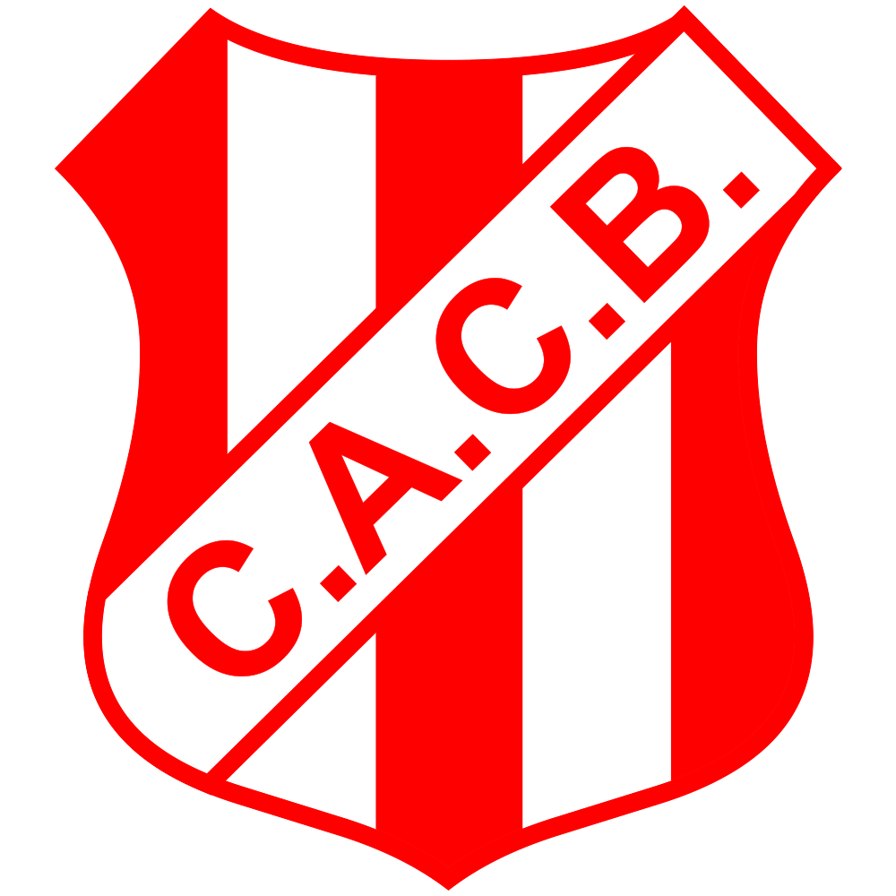

El Club Atlético Costa Brava, fundado el 20 de agosto de 1932, es uno de los pilares deportivos e institucionales más grandes de General Pico. Reconocidos popularmente bajo el apodo de "El Costero" y vistiendo con orgullo sus tradicionales colores rojo y blanco, el club ha construido una riquísima historia íntimamente ligada al desarrollo del fútbol pampeano.
Con su sede social ubicada en el corazón de la ciudad y su imponente estadio, el Nuevo Pacaembú, Costa Brava es un protagonista indiscutido de la Liga Pampeana de Fútbol y representante habitual en los torneos regionales a nivel nacional. Además del fútbol de primera división e inferiores, la institución alberga múltiples disciplinas, consolidándose como un espacio de contención, deporte y familia para toda la comunidad piquense.